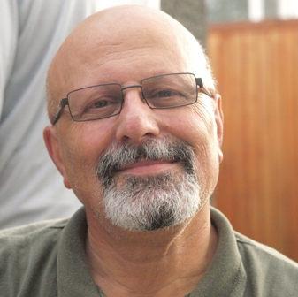

پذيرش > سایت نوشته ها > نامه ای به نسل امروز


 نامه ای به نسل امروز نامه ای به نسل امروز
10 مرداد 1389 - هادی ابراهیمی - نسخه قابل چاپ
محبوبه جان سلام!
پاسخ به نامهات را دستمایه یادداشت این هفتهام قرار دادهام تا دلتنگیهایم را نسبت به مسعود باستانی عزیز که بیش از یک سال از دستگیریاش پس از رسوایی انتخابات ۲۲ خرداد میگذرد، ابراز کنم. مهسا گرامی، مزدک، مازیار، سروش و تو نازنین که هرگز هیچ یک از شماها را از نزدیک ندیدهامتان، برایم تصویرگر نسل جوان و روزنامهنگاران فرهیختهی کشورم هستید. وجدان بیدارتان، بازتاب بیداری نسلی است که زیر سلطه ظلم، ریا، دروغ و استبداد مذهبی در نهایت متانت، بهای مطالبات معوقماندهی نسل پیش از خود را میپردازد. حاکمیت مذهبی ایران چنان عرصه را بر شما روزنامهنگاران جوان تنگ کرده و بستهاست که هر گونه تلاشتان را، با بیرحمانهترین شیوه پاسخ میدهد.
با نامهات، پوسته طرد و شکنندهام را که انگار ماهها منتطرِ این ترک بوده، ترک دادهی. من به رغم سالها دوری از کشور، گرچه افتخار آشنایی با نسل شما را از نزدیک نداشتم ولی شانس حشر و نشر و نشست و برخاست با نسل جوان امروز کشورم را به برکت حرکت اعتراضی دختران و پسران دانشجو و جوان کشورم در این شهر – ونکوور / کانادا – و به قولی خارج از کشور را، داشتهام. وقار و متانت این نسل را از نزدیک دیدهام و شاهد بودهام چگونه تلاش میورزد با نسل من دیالوگ برقرار کند و خشونت و تنفر مزمن نسل مرا به چالش بکشد. پس نمیتوانم به غیر از سن و سالم، زیاد با شما و اندیشهی نسل امروز ایران، فاصله داشته باشم.
به همت همین نشست برخاست با نسل جوان امروز ایران، بارقههای امید در نسل من شکوفا شد و هر روز نیز شکوفاتر میشود.
نسلی که به دنبال یک سئوال مدنی از حاکمیت دروغ و مزور، به شکل صلحآمیز به خیابان میآید، پاسخاش را با گلولههای سربی داغ میگیرد. و مادرانی که داغدارانند، داغ عزیزی روی دلهایشان تا پایان عمر میسوزد و التیام نمییابد. اما متانت این نسل و وقار مادران داغداری که همچنان پیگیر اعتراضاتشان به همهی اشکال مدنی ممکن هستند، چه درسهای تاریخیای که به نسل من نمیآموزد.
مسعود باستانیها نه تنها بهخاطر اینکه در پاسداری از شرافت روزنامهنگاری در زندان گرفتار آمدهاند برایم قابل احتراماند، بلکه همچنین به دلیل نمایندگی از نسلی که، فریاد معوق مانده بیش از یکصد سال اخیر را بازتاب میدهند و بر خلاف نسل من و نسل پیشتر از من در انقلاب ۱۳۵۷ - که نمیدانستند چه میخواهند - میدانند چه میخواهند. ما فقط به سرنگونی رژیمی میاندیشیدیم بیآنکه افق تازهای در فردا روزش، در ذهن داشهباشیم. نسل شما، هم میداند چه نمیخواهد و هم به چشمانداز و افق فردایش نیز میاندیشید. شما و نسل شما برای من از احترام و جایگاه خاصی برخوردارید که در انتظار درو کردن توفان نیست و از ظرفیت و متانت بالایی برخوردار است. نسل من تکیهاش بر این شعار استوار بود: «آنکس که باد میکارد، توفان درو خواهد کرد.» توفان هیچگاه حاصلی جز خرابی و ویرانی ببار نمیآورد و وقتی سر بگیرد هیچ نسل و جنس و رنگ را مستثنی نمیکند. نسل شما تلاش میکند از این خشونت تحمیل شده، بپرهیزد و بگریزد.
ماههاست که ستون یادداشت مسعود باستانی در شهرگان خالیاست اما این خالی بودن از سویی نیز، پررنگ بودن حضور پرمتانت او را یادآور میشود. هفتهها بود که تا آزادی مسعود باستانی، ستونی را سفید زدهبودیم و وعده کردهبودیم تا مسعود و دیگر روزنامهنگاران شرافتمند و آزادیخواه در زندان هستند، این ستون به عنوان شکلی از اعتراض مدنی همچنان باقی بماند، خالی و سفید. مسعود باستانی و دیگر روزنامهنگاران، فعالان حقوق بشر و همهی آزادیخواهان دربند، دومین سال زندانی بودن خود را در سختترین شرایط سپری میکنند. مسعود باستانی در دادگاه نمایشی، محکوم میشود که علیه نظام سیاهنمائی کرده و نیز اخباری از وضعیت زندانها و برجستهسازی مسائل سیاسی، گزارشاتی به سایت ضدانقلابی هفته نامه شهرگان، روز آنلاین و نیز رادیو چکاوک داده است.
مسعود روزنامهنگار جوانی که تناش هنوز از زخمههای شلاق دادگاه چند سال پیش التیام نیافته و گناهی جز پایداری به تعهد، شرافت و مسئولیت روزنامه نگاری مرتکب نشده، از سوی کودتاچیان به ۶ سال حبس محکوم شدهاست و این دوره را در زندان رجائی شهر کرج سپری میکند. او تاکنون حتی یکبار هم به مرخصی نیامده و همسرش مهسا امرآبادی روزنامهنگار، همچنان انتظار میکشد تا با مرخصی وی موافقت شود. پیشتر عنوان کردهبودم که دفاع از آزادی روزنامهنگاران، به منزله دفاع از آزادی مطبوعات و ارزش گذاشتن به حق دسترسی عموم به اطلاعات است. سانسور و محدودیت در اطلاع رسانی از سوی دولت و حاکمان رژیم جمهوری اسلامی ایران، ناهنجاری آشکاری با عصر اطلاعرسانی دنیای امروز است.
محبوبه عزیز!
نسل شما، ولی فقیه را – بخوان سلطان را - به رغم جمع کردن تمامی سپاهیان و فرماندههان دور برش، آچماز کردهاست. ولی فقیه و ولایتاش، بی حرکت و بدون استراتژی در برابر اعتراضات نسل امروز، وامانده و حقیر شده و دارد از درون آرام آرام میپوسد.
نسل شما به رغم تلفاتی که داده، نباختهاست. سلطان آچماز شدهاست!
شهرگان
ارسال به
بالاترین
،
توییتر
،
فریندفید
،
فیسبوک
در همين بخش :
 یک خبر تلخ؟ یک قانونشکنی؟ یک تصمیم بخشنامهای جدید؟ یک خبر تلخ؟ یک قانونشکنی؟ یک تصمیم بخشنامهای جدید؟
چرا بایست به سکسوالیته پرداخت؟ / نفیسه آزاد
آزارجنسی خانگی؛ «قربانی» نه، «نجات یافته»
زنان، بزرگترین بازندگان بهار عرب
سانسور از دیدگاه جنسیتی/الهه امانی
ديگر بخش ها :
طرح یک میلیون امضا
|
مقالات
|
سایت نوشته ها
|
اخبار
|
گزارش كمپين
|
گفت و گو
|
علیه سکوت
|
كوچه به كوچه
|
نامه های شما
|
گزارش ویژه
|
گفتگو با اعضا
|
ویژه سالگرد کمپین
|
تصویر برابری
|
دل آرام علی
|
تریبون
|
مقالات
|
تاریخ شفاهی
|
خارج از چارچوب
|
کتابخانه
|
درباره کمپین
|
کمپین در شهرها
|
کمپین در بند
|
صدای تغییر
|
ویژه 22 خرداد
|
لایحه حمایت از خانواده
|
گالری
|
عشا مومنی
|
امیر یعقوبعلی
|
خدیجه مقدم
|
راحله عسگری زاده و نسیم خسروی
|
پروین اردلان،جلوه جواهری، مریم حسین خواه، ناهید کشاورز
|
زینب پیغمبرزاده
|
سعیده امین، سارا ایمانیان، محبوبه حسین زاده، ناهید کشاورز و همایون نامی
|
احترام شادفر
|
نسیم سرابندی زاده،فاطمه دهدشتی
|
وبلاگ مهمان
|
پرونده خرم آباد
|
دستگیری ها
|
مریم مالک
|
پرستو اللهیاری
|
مهرنوش اعتمادی
|
سمیه رشیدی
|
Other Languages
|
همراهان
|
«فراخوان کمپین ده روز با بهاره هدایت»
| English
|